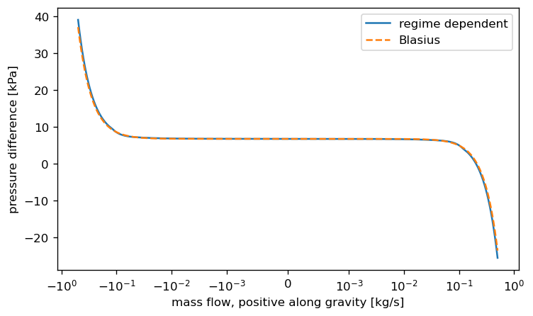

Pressure Drop
The flow of coolants through the core, pumps, heat exchangers and other coolant cycle components is determined by means of pressure differences. These differences (drops) depend on the cycle itself, and can be divided into several categories.
First and foremost, there are pressure drops due to friction of the coolant with the surrounding walls and due to local changes in flow area, direction and more. These kinds of pressure drops tend to be close to \(\Delta p\propto \rho v^2\), and are usually described by an effective relation following this reasoning:
Where \(f\) (sometimes denoted \(K\)) may be dependent non-trivially on geometry, flow properties and regime.
Other contributions come from gravity and inertia.
Friction
- Blasius_friction(re)[source]
An early (1913) approximation by Blasius[1] for the turbulent pipe flow Darcy friction factor.
\[f = \frac{0.3164}{\text{Re}^{0.25}}\]- Parameters:
re (Value) – The Reynolds number.
- Returns:
f – The Darcy friction factor
- Return type:
Value
Examples
>>> Blasius_friction(10_000) 0.03164
- Darcy_Weisbach_pressure_by_mdot(mdot, rho, f, L, Dh, A)[source]
The Darcy-Weisbach equation relates pressure loss due to friction in pipe flow to the average velocity of an incompressible fluid:
\[\Delta p = f \frac{\rho u^2}{2}\frac{L}{D_h}\]In this function, the velocity is replaced by \(\dot{m}=\rho u A\) where u is the average velocity and A the cross-section. The pressure drop is sensitive to the flow’s direction:
\[\Delta p = f \frac{\dot{m}|\dot{m}|}{2\rho A^2}\frac{L}{D_h}\]If \(\dot{m}>0\) then the pressure returned is positive.
- Parameters:
mdot (KgPerS) – Mass current.
rho (KgPerM3) – Fluid density.
f (Value) – The Darcy Friction Factor.
L (Meter) – Pipe length.
Dh (Meter) – Hydraulic diameter.
A (Meter2) – Cross-sectional flow area.
- Returns:
dp – Pressure drop across the pipe.
- Return type:
Pascal
Examples
>>> Darcy_Weisbach_pressure_by_mdot(mdot=0., rho=1, f=1, L=1, Dh=1, A=1) 0.0 >>> Darcy_Weisbach_pressure_by_mdot(mdot=1., rho=1, f=1, L=1, Dh=1, A=1) 0.5 >>> Darcy_Weisbach_pressure_by_mdot(mdot=-1., rho=1, f=1, L=1, Dh=1, A=1) -0.5
- friction_factor(name, **kwargs)[source]
Create a Darcy friction factor chosen from the list below with uniform signatures. The main usage of this function is as input for
pressure_diff.Available functions:
regime_dependent
regime_dependent_friction, which depends on theReNo., givenre_bounds. Importantly, employs a geometry correction (e.g.rectangular) upon all regimes and aviscositycorrection upon the laminar factor only.laminar
laminar_friction. Does not employ corrections as described above.turbulent
Blasius
- Parameters:
name (Literal['regime_dependent', 'laminar', 'turbulent', 'Blasius']) – Method name
kwargs (Dict) – Options to pass onto the given method
- Returns:
f – Darcy friction factor
- Return type:
GeneralDarcyFactor
- laminar_friction(re)[source]
Due to the Hagen-Poiseuille law, an incompressible Newtonian fluid in laminar flow through a long constant cylindrical pipe yields an analytic Darcy friction factor: \(f=64/\text{Re}\)
- Parameters:
re (Value) – The Reynolds number.
- Returns:
f – The Darcy friction factor.
- Return type:
Value
- rectangular_laminar_correction(aspect_ratio)[source]
For a circular pipe, the laminar Darcy friction factor is analytical. For a rectangular pipe, corrections must be made.
In this function such a correction is returned as used in[2].
- Parameters:
aspect_ratio (float) – channel_depth / channel_width (less than 1)
- Returns:
K_R – geometric correction coefficient
- Return type:
float
See also
Examples
>>> float(rectangular_laminar_correction(1.)) 1.1246190353017915 >>> float(rectangular_laminar_correction(0.)) 0.6668484123609236 >>> float(rectangular_laminar_correction(0.5)) 1.0363896075094456
- regime_dependent_friction(T_cool, T_wall, mdot, fluid, pipe, re_bounds, k_R, k_H=None, turbulent=CPUDispatcher(<function turbulent_friction>), laminar=CPUDispatcher(<function laminar_friction>))[source]
A flow-regime-dependent friction coefficient function.
- Parameters:
T_cool (Celsius) – Coolant bulk temperatures
T_wall (Celsius) – Wall temperatures
mdot (KgPerS) – Coolant mass flow rate
fluid (LiquidFuncs) – Coolant properties
pipe (EffectivePipe) – Pipe geometry
re_bounds (tuple[float, float]) – Flow regime (Re values) boundaries, see
flow_regimes.k_R (float) – Geometrical factor. At laminar flow the Darcy coefficient is analytical (see
laminar_friction) for a circular duct.k_Ris a multiplicative factor such that \(f_\text{laminar} = \frac{64}{\text{Re} k_R}\). See for example,rectangular_laminar_correction. This correction is applied to all regimes.k_H (Callable[[float, float], float] | None) – Viscosity factor function, which takes as input \(k_H(P_\text{heat}/P_\text{wet}, \mu_\text{wall} / \mu_\text{bulk})\). By default, it is omitted. It is a laminar correction: it multiplies the laminar factor only, so it fades out across
re_boundsand never touches the turbulent factor. The wall viscosity is read only whenk_His given. Seeviscosity_correction.turbulent (Callable[[Value], Value]) – Strategy for calculating the friction coefficient for turbulent flow.
laminar (Callable[[Value], Value]) – Strategy for calculation the friction coefficient for laminar flow.
- Returns:
f – The Darcy friction factor.
- Return type:
Value
- turbulent_friction(re, epsilon=0)[source]
An approximation for the friction factor of the implicit Colebrook-White equation, as written in RELAP and[2] page 3, chapter 2.1.2.
The result is floored by the laminar \(64/\text{Re}\). Below Re of about 7, where the approximation is undefined, the laminar value is returned.
- Parameters:
re (Value) – Reynolds Number.
epsilon (Value.) – Relative roughness (roughness height / hydraulic diameter).
- Returns:
f – The Darcy friction factor
- Return type:
Value
Examples
>>> turbulent_friction(4e3) 0.039804935964641644 >>> turbulent_friction(4e3, 0.1) 0.10560870441248855 >>> turbulent_friction(1e6) 0.011649393290640643 >>> turbulent_friction(1e4) 0.030874516278124504
At very low Reynolds numbers the laminar floor takes over:
>>> turbulent_friction(5.0) 12.8 >>> re = np.array([5.0, 7.0, 15.0, 30.0, 60.0]) >>> bool(np.allclose(turbulent_friction(re), 64 / re)) True
- viscosity_correction(heat_wet_ratio, mu_ratio)[source]
Temperature differences yield varying viscosity, which affects friction. Thus, a correction must be made.
In this function such a correction is returned as used in[2].
- Parameters:
heat_wet_ratio (Value) – Heated perimeter / Wet perimeter
mu_ratio (Value) – Viscosity at wall / Viscosity at bulk.
- Returns:
K_H – viscosity correction coefficient
- Return type:
Value
Examples
>>> viscosity_correction(1., 1.) 1.0 >>> viscosity_correction(1., 0.) 0.0 >>> viscosity_correction(1., 2.) 1.4948492486349383
With regime_dependent_friction below re_bounds, the laminar factor \(64/(\text{Re}\,k_R)\)
makes the friction pressure linear in the flow, so it passes through zero flow and reverses with it,
continuous in both directions. The viscosity correction k_H multiplies the laminar factor only and
fades out across re_bounds.


Pressure difference of a 0.7 m long, 2 mm gap channel in ten cells against mass flow, with gravity, crossing zero flow at the hydrostatic head.
Local
References
- bend_factor(angle, relative_curvature, re)[source]
Compute K, the local pressure drop factor for
\[\Delta p = K\rho v^2/2,\](where \(\Delta p\) is the pressure drop over a pipe bend, \(\rho\) is the fluid’s density and \(v\) is the fluid’s velocity), according to Idelchik Diagram 6.1[3] (page 424).
This correlation applies to the case of a low curvature smooth pipe bend
\[R_0/D_h < 3\](where \(R_0\) is the pipe’s axis radius of curvature, measured from the bend center to the center of the pipe, and \(D_h\) is the hydraulic diameter of the pipe), with circular/square cross-sections and at large Re numbers (above 10,000).
- Parameters:
angle (Radians) – The angle of the bend.
relative_curvature (float) – The radius of curvature of the pipe’s axis divided by the hydraulic diameter.
re (float) – The Reynolds number.
- Returns:
K – Local pressure drop factor.
- Return type:
float
- contraction_factor(aratio)[source]
Closed form approximation for sudden contraction at high Re numbers.
According to Idelchik Table 4.10, there is a closed form approximation for sudden contraction of the form \(\frac{1}{2}\left(1-\frac{A_2}{A_1}\right)^{\frac{3}{4}}\). This is written to be true for Re > 35000, but the table for lower Re numbers stops at 10000, so it is unclear what to do for interim values of Re.
- Parameters:
aratio (Value) – Area ratio in [0,1]
- Return type:
float | ndarray
- expansion_factor(aratio)[source]
Compute K, the pressure drop factor (Borda, Carnot), for
\[\Delta p = K\rho v^2/2\]Where
\[K = \left(1 - \frac{A_1}{A_2}\right)^2\]According to Idelchik Table 4.2[3], this formula is correct for large Re numbers, above 3300.
- Parameters:
aratio (float) – Area ratio in [0,1]
- Returns:
K – Pressure drop factor
- Return type:
float
Examples
>>> expansion_factor(0. / 1.) 1.0 >>> expansion_factor(1. / np.inf) 1.0 >>> expansion_factor(1. / 2.) 0.25
- local_pressure_by_mdot(mdot, rho, f, A)[source]
Calculates the local pressure dot according to a known mass flow rate.
This pressure drop is not the static pressure drop across the local pipe area change, but rather the total pressure drop, i.e. the amount of lost energy in the Bernoulli equation terms.
Following the quadratic velocity relation to local pressure:
\[\Delta p = f \frac{\rho u^2}{2}\]In this function, the velocity is replaced by \(\dot{m}=\rho u A\) where u is the average velocity and A the cross-section. The pressure drop is sensitive to the flow’s direction:
\[\Delta p = f \frac{\dot{m}|\dot{m}|}{2 \rho A^2}\]If \(\dot{m}>0\) then the pressure returned is positive.
- Parameters:
mdot (KgPerS) – Mass current.
rho (KgPerM3) – Fluid density.
f (Value) – The Darcy Friction Factor.
A (Meter2) – Cross-sectional flow area.
- Returns:
dp – Pressure drop across the pipe.
- Return type:
Pascal
Examples
>>> local_pressure_by_mdot(1., 1000., 1., 1.) 0.0005 >>> local_pressure_by_mdot(-1., 1000., 1., 1.) -0.0005 >>> local_pressure_by_mdot(0., 1000., 1., 1.) 0.0
- local_pressure_factor(*, mdot, positive_flow, negative_flow, **kwargs)[source]
Considering \(\dot{m}\), returns
Kpressure coefficient ofpositive_flow(A1, A2)ornegative_flow(A1, A2).This pressure coefficient is the loss coefficient for the total pressure in the Bernoulli equation, i.e. actual energy loss, not energy transfer between static and dynamic pressures.
- Parameters:
mdot (KgPerS) – Mass current.
positive_flow (LocalPressureFactorFunc) – Expansion/Contraction
negative_flow (LocalPressureFactorFunc) – Expansion/Contraction
- Returns:
K – Pressure drop factor
- Return type:
float
Examples
>>> def pos(a1, a2): return a1+a2 >>> def neg(a1, a2): return a1*a2 >>> local_pressure_factor(mdot=1., positive_flow=pos, negative_flow=neg, a1=1., a2=2.) 3.0 >>> local_pressure_factor(mdot=-1., positive_flow=pos, negative_flow=neg, a1=1., a2=2.) 2.0
- mdot_by_local_pressure(dp, rho, f, A)[source]
The inverse function of
local_pressure_by_mdot, which returns \(\dot{m}\) given a known pressure difference.\[\dot{m} = \text{sign}(\Delta p)\sqrt{\frac{2\rho A^2 |\Delta p|}{f}}\]If \(\Delta p > 0\) then the current returned is positive.
- Parameters:
dp (Pascal) – Pressure drop across the pipe.
rho (KgPerM3) – Fluid density.
f (Value) – The Darcy Friction Factor.
A (Meter2) – Cross-sectional flow area.
- Returns:
mdot – Mass current.
- Return type:
KgPerS
Examples
>>> mdot_by_local_pressure(dp=0., rho=1e3, f=1., A=1.) 0.0 >>> mdot_by_local_pressure(dp=1., rho=1., f=2., A=1.) 1.0 >>> mdot_by_local_pressure(dp=-1., rho=1., f=2., A=1.) -1.0
- sudden_contraction_factor(aratio, re)
The Idelchik Table 4.10 interpolation of the local sudden expansion pressure drop coefficient.[3]
The table used is bounded by \(A_2/A_1 \in [0.1, 0.6]\) and \(\text{Re} \in [10, 10000]\). Within those boundaries, linear interpolation is performed.
For larger Reynolds numbers, an analytic solution is used,
contraction_factor. For smaller Reynolds numbers, \(K = 50/\text{Re}\) is used.As for area ratios \(A_2/A_1 \notin [0.1, 0.6]\), where the Reynolds no. is within the table values, an interpolation by the Reynolds no. is performed between the limiting analytic solutions, while for the lower end (\(\text{Re}=10\)) an interpolation by the area ratio is added to match \(K(A_2/A_1=1)=0\) and \(K(A_2/A_1=0)=0.5\) (matching a contraction from an infinite pool,[3]).
The above result may not be applicable for such small Re numbers, but it would not have a large effect since these pressure drops zero out as \(\mathcal{O}(v)\).
- Parameters:
aratio (float) – Area ratio in [0,1]
re (float) – Reynolds number
- sudden_expansion_factor(aratio, re)
The Idelchik Table 4.2 interpolation of the local sudden expansion pressure drop coefficient.[3]
The table used is bounded by \(A_1/A_2 \in [0.1, 0.6]\) and \(\text{Re} \in [10, 3300]\). Within those boundaries, linear interpolation is performed.
For larger Reynolds numbers, an analytic solution is used,
expansion_factor. For smaller Reynolds numbers, \(K = 31/\text{Re}\) is used.As for area ratios \(A_1/A_2 \notin [0.1, 0.6]\), where the Reynolds no. is within the table values, an interpolation by the Reynolds no. is performed between the limiting analytic solutions, while for the lower end (\(\text{Re}=10\)) an interpolation by the area ratio is added to match \(K(A_1/A_2=1)=0\) and \(K(A_1/A_2=0)=1\) (matching an expansion into an infinite pool).
The above result may not be applicable for such small Re numbers, but it would not have a large effect since these pressure drops zero out as \(\mathcal{O}(v)\).
- Parameters:
aratio (float) – Area ratio in [0,1]
re (float) – Reynolds number
Other Pressure Drop Components
Gravitational Pressure
- gravity_pressure(rho, dh, g=9.80665)[source]
In the case of an incompressible barotropic fluid at rest, the force exerted by gravity over a fluid column is \(\Delta p=\rho g\Delta h\)
- Parameters:
rho (KgPerM3) – Fluid density.
g (MPerS2) – Gravitational acceleration.
dh (Meter) – Height difference.
- Returns:
dp – Pressure drop due to gravity.
- Return type:
Pascal
Examples
>>> gravity_pressure(1., 1.) 9.80665 >>> gravity_pressure(1000, 0.) 0.0 >>> # What is the pressure head (for water) on the moon? >>> gravity_pressure(1000, 1, g=(moon := 1.62)) 1620.0
See also
Gravity - a corresponding Calculation.
Inertial Pressure
- inertia_pressure(mdot2, dl, A)[source]
A change in flow along a streamline incurs a pressure drop. See further explanation in
inertia.\[\Delta p = \frac{dl}{A}\frac{d\dot{m}}{dt}\]- Parameters:
mdot2 (KgPerS2) – \(\ddot{m}\), time derivative of mass flow
dl (Meter) – Length element along the streamline
A (Meter2) – Area through which the liquid flows in
dl.
- Returns:
dp – Pressure drop (positive).
- Return type:
Pascal
See also
Inertia - a corresponding Calculation.
Helper Functions
A ready made Channel-compatible pressure function is provided:
- pressure_diff(T, Tw, fluid, mdot, pipe, dz, f=<function _re_friction.<locals>._f>, g=9.80665, mdot2=None, **_)[source]
Returns pressure difference. Positive direction is assumed downward. This function calculates frictional, inertial, and gravitational pressure drops.
- Parameters:
T (Celsius) – Bulk Coolant temperature
Tw (Celsius) – Wall temperature
fluid (LiquidFuncs) – Coolant properties
mdot (KgPerS) – Coolant mass current
pipe (EffectivePipe) – Channel geometry
dz (Meter) – Cell sizes in the flow’s direction
f (GeneralDarcyFactor | None) – Darcy-Weisbach friction factor, default being
friction.Blasius_friction.g (MPerS2) – Gravitational acceleration.
mdot2 (KgPerS2 | None) – \(\ddot{m}\), time derivative of
mdot
- Returns:
dp – Pressure drop at each cell
- Return type:
Pascal
- static_pressure(pressure, mdot, area, density)[source]
Calculates the static pressure from the total (static+dynamic) Bernoulli term.
- Parameters:
pressure (Pascal) – The total pressure (static+dynamic)
mdot (KgPerS) – The mass flow rate
area (Meter2) – The cross-section area of the pipe
density (KgPerM3) – The fluid density
- Return type:
float | ndarray
Examples
>>> static_pressure(1., 1., 1., 1.) 0.5 >>> static_pressure(1., 0., 1., 1.) 1.0 >>> static_pressure(1., -1., 1., 1.) 0.5